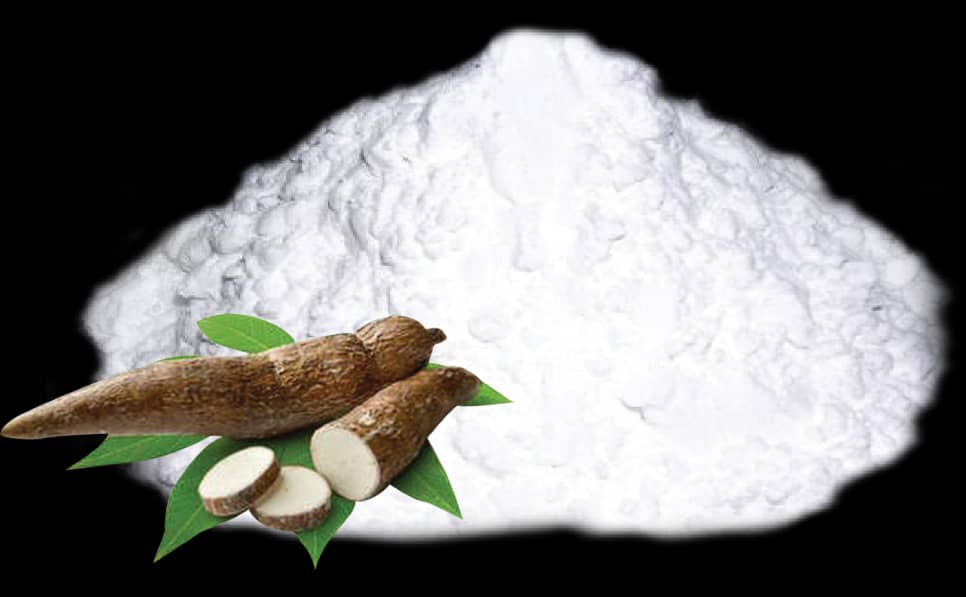

Farines
Découvrez la Farine, un véritable trésor culinaire qui allie tradition et modernité. Issue d’un savoir-faire ancestral, elle est soigneusement élaborée pour offrir une texture fine et un goût authentique.
Avec la Farine, redécouvrez le plaisir d’une cuisine authentique et savoureuse.
Adoptez-la dès maintenant et sublimez vos recettes !
 Farine de Kabato
Farine de Kabato avec potasse 500g
 Farine de Placali
Farine de Placali déshydraté 500g
 Farine de Patate
Farine de Patate Douce 500g
 Farine de Banane
Farine de Banane Plaintain 500g
 Farine de Manioc séché
Farine de Manioc séché Konkodé 500g
Farine d'Amidon 500g